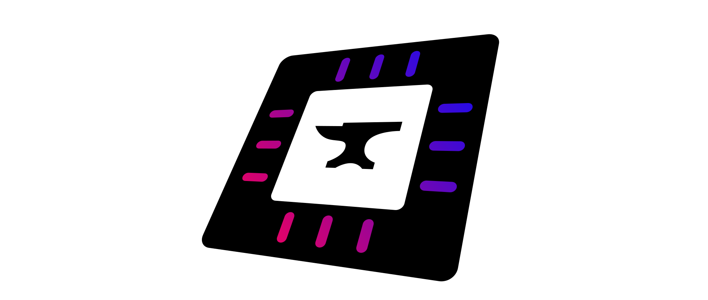

Transactron documentation 
Development environment
Documentation for Transactron
API
Transactron documentation
»
Transactron
View page source
Transactron
Development environment
Setting up
Running tests
Using scripts
lint.sh
build_docs.sh
tprof.py
Documentation for Transactron
Introduction
Basic usage
Implementing transactions
Implementing methods
Method or transaction?
Method argument passing conventions
Method definition conventions
Method return value conventions
Readiness signals
The library
Advanced concepts
Special combinational domains
Scheduling order
Conflicts
Transaction and method nesting
API
transactron
transactron package